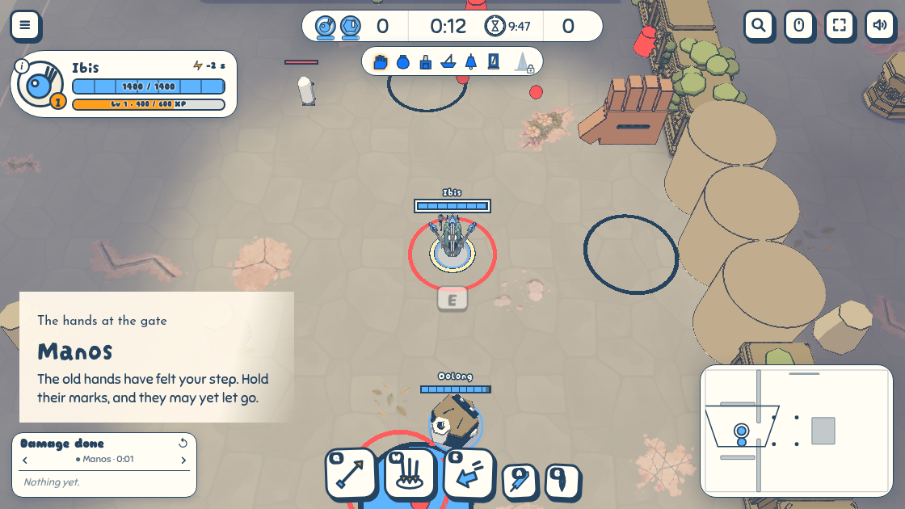

Hints that show once
To review · 2026-11-01 · thr_ncwvjma4p5
The first time Manos' shard ring is about to land on Ibis, Ibis's vault key (E) is printed in ink on the floor at the hero's feet; Ibis vaults, and the key sinks where Ibis stood and fades. A second visit in the same browser shows nothing. Is the key the right size and weight on the floor, or should it be quieter still?
